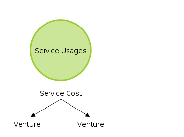

Services & Usages¶
Billing model implemented in scrooge is based on services and usages. We can distinguish service with servis usages and base usages. Base usages are use to define cost of venture/service for hardware. Service is some kind of ‘bag’ for group many ventures (analogously, ventures are a bag for group many devices). Service usage is used to calculate how many cash each of clients (ventures used this service) should pay for use service.

Services¶
Venture is the base being for which we calculate costs. Each venture contains a few devices and can use many services. Service is some kind of bag for group many ventures. For example, when we create service named Datastorage, we can include to them a ventures named datastorage_test and datastorage_production and then we have ‘a bag’ named Datastorage. Cost of ventures datastorage_test and datastorage_production is now include to total cost of service named Datastorage. Now we have two more ventures named webserviceA and webserviceB which use our Datastorage service (when i say ‘use Datastorage’ i mean they use some devices from datastorage_test and datastorage_production ventures).

Usages¶
Usages contains the most basic and lower level values as scrooge require to calculate and create report.
Base usages¶
This usage give as information how mutch cost a devices. So as you can imagine, every device in datacenter use power and probably internet, deal place and require people to take care of it. Every device have the cost of buying also. For spread cost, each of devices must contains information about how many energy it consump and how mutch place its take and here we have our base usages. Base usages define how many units take each of device. For calculate cost for single device, for example energy cost, energy consumption units are count to one value and divide by enery cost. Then we have a price per one unit and when we multiply this price per number of units for single device we get price for this device.

- Power Consumption
- Collect: Each device model contains, entered manually, informations about power consumption. Collect plugin collect this information every day and write it like a simple ‘power consumption’ abstract unit.Cost: Accountants enter cost from invoice manually.Report: Cost of one unit is calculate from divide total usages and total cost. Plugin sum all usages per venture and multiply it by cost of one unit.
- Height of device
- Collect: This base usage is collect exactly the same like power consumption.Cost: Accountants enter cost from invoice manually.Report: This base usage cost per venture is calculate exactly the same like power consumption.
- Network
- Collect: From nfsen servers are collects usages per IP. From ralph is collect information about mutching IP to Venture. Plugin mutch IP with Venture and save useges from nfsen as venture usage. Unknow IPs are mutch with venture from settings.Cost: Accountants enter cost from invoice manually.Report: This base usage cost per venture is calculate exactly the same like power consumption.
- Deprecation
- Collect: Each asset contains information about asset cost (exactly, it is device cost). Collect plugin collect this information like daily device imprint.Cost: Logistics enter device (asset) cost manually.Report: Cost for one day is calculate from divide device total cost and deprecation days. Deprecation days are calculate based on deprecation rate. Plugin sum all costs per one day from all devices and multiply it by days number for which report is generate
- Teams work
- Collect: Teams based on collected data so, there is no any additional logic for it.Cost: Accountants enter cost and teams number manually.Report: There are 4 ways to calculate team work cost.1. By time2. By devices and cores count3. By devices4. By Distribute cost to other teams proportional to team members count
Service usages¶
This type of usage is use to spread cost of service to ventures. Every day each of service is obligate to supply to the scrooge informations about how mutch of service was use by each venture. Befor start supply information, service and usages must be define and link together from admin panel. You can find more about create services and usages in how to use section.
On report, services are represent like a columns with count and cost of usages and one additional column with total cost of service. The most important ‘to know’ is the cost of servise is the same likes sum of costs ventures included to this service. Service is some kind of mechanizm to spread costs of few ventures to anyother ventures.
One of big wins of scrooge is automate plugin. This is this what give you possibility add your service to our system without create any line of code. This plugin use supplied data, created and linked services and usages and return complete of biling information. Of course if you need represent your data in your own style you can try negotiation create dedicated plugin or do it yourself but it is not recommended.